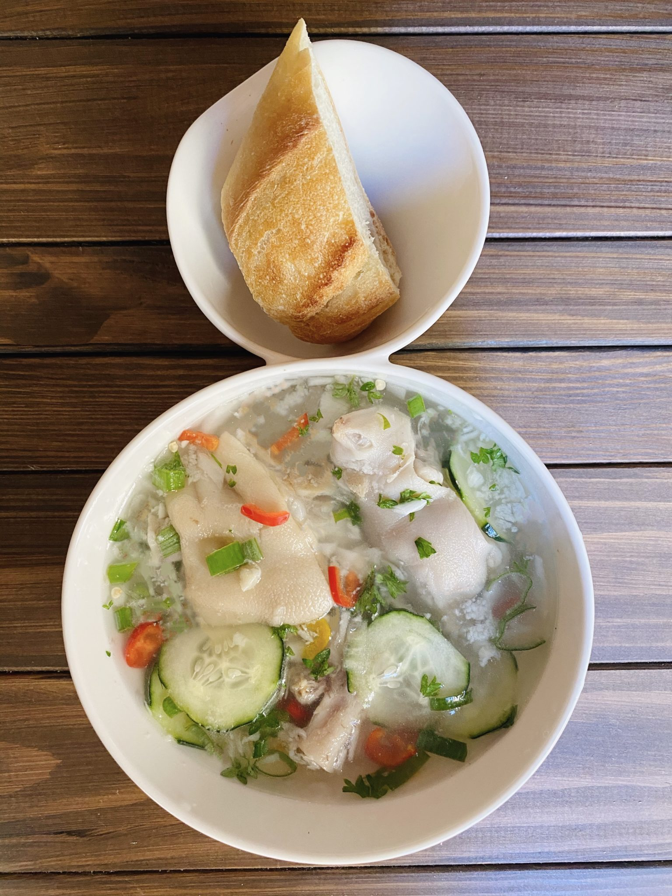

Dominican Souse Recipe

What is Dominican Souse?
Souse is Pigs Feet chilled in a a thick stock.
It is usually room temperature or cold. It is typically served with bread.
Souse is from the island of Dominica.
Ingredients
- 6 pieces Pig's feet boil Boil pig feet in a pressure cooker or large pot. Add garlic cloves and a little salt to the boiling water.
- 3 cups Water
- 1 tbsp Salt
- 2 tbsp Lime/ lemon juice Use freshly squeezed fresh lime or lemon juice
- whole Fresh hot peppers. Based on your threshold
- 1 tbsp Parsley chopped
- 1 tbsp Thyme leaves chopped
- 3 Cloves Garlic minced or chopped
- 1 head Scallion chopped
Steps
- Throw out all the water, remove imperfections, and rinse.
- In a bowl, combine water, onions, garlic, salt, lime juice, parsley, thyme, scallions and peppers.
- Take a spoon and gently crush ingredients against the sides of the bowl, so that they can commingle better and distribute their flavors
Recipe Reference
Click Here
HOME